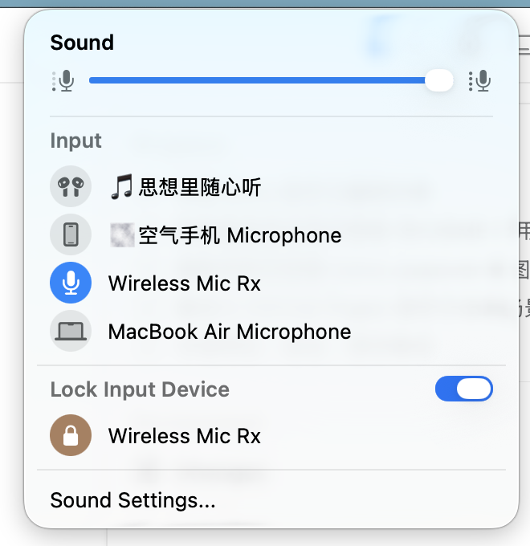

Native menu bar flow
Switch input devices from a compact Sound-style popover without opening System Settings.
A tiny macOS menu bar utility
AudioInputLocker adds a Sound-style input menu to the menu bar and can lock your preferred input device, so AirPods, System Settings, and reconnecting gear do not quietly take over your microphone.

The app watches the Core Audio default input route. When something changes it, lock mode restores your chosen device and shows a short confirmation HUD.
Typical case
You can keep listening through AirPods while the Mac stays on the microphone you picked for calls, recordings, or streaming.
Step 1: lock your preferred input device.
AudioInputLocker stays close to macOS conventions: one menu, one clear lock, and no account, analytics, or network dependency.
Switch input devices from a compact Sound-style popover without opening System Settings.
Device enumeration, selection, volume, and lock restoration all run on your Mac.
The app follows the system language and currently supports English and Simplified Chinese.
The public preview includes the menu popover, lock state, and the transient HUD shown after a restore.
Input list, volume slider, and the locked device in one place.

A short visual confirmation when the app restores your preferred input.
The project is MIT licensed. Preview builds are available on GitHub Releases, and the most transparent path is still building from source.